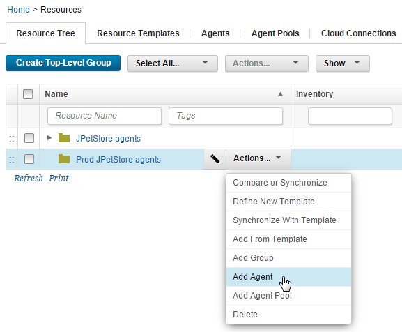
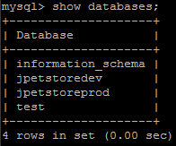
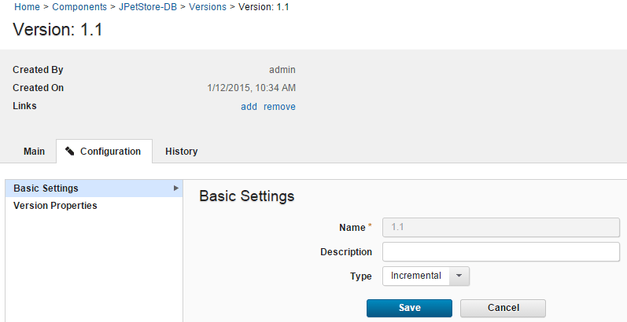
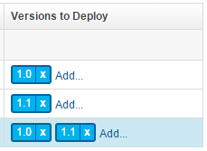

Configuring the server and target system
Modify the HCL® UrbanCode™ Deploy server that you used in the previous tutorial. Create another agent resource and incorporate a new environment property to allow for easy reuse.
Before you begin the tutorial, make sure that you completed the Prerequisites.
To work through this tutorial, you must use the target system that you configured in the Deploying a simple web application tutorial.
This system hosts the following items that are associated with your HCL UrbanCode Deploy JPetStore application:
- An HCL UrbanCode Deploy agent
- A MySQL database
- An instance of Apache Tomcat
You must have MySQL and Apache Tomcat installed on the system. Follow these steps to set up an agent resource, create a new MySQL database, and redeploy your application to your environment:
-
Create another resource and add the existing agent to it. To reuse the agent with another environment on the same HCL UrbanCode Deploy server, you must associate the agent with another resource.
- On the HCL UrbanCode Deploy server, click the Resources tab. Be sure to click the Resources tab at the top of the page.
- From the Resource Tree tab that is displayed, click Create Top-Level Group.
- In the Create Resource window, provide the new group with a name such as Prod JPetStore agents and click Save.
-
On the same row as the new resource group, click Actions > Add Agent, as shown in the following figure:

-
In the Create Resource window, select the agent in the Agent field and click Save. The agent is listed as a child of both resource groups. By associating the agent with both resource groups, you can use the same agent with your existing environment and the one that you create in a later lesson.
-
Create an empty database for the application to use in another environment:
-
Log in to the MySQL command line as the MySQL root user. For example, if you installed MySQL as the root user, run this command from the command line:
mysql -u rootThe command line shows a prompt that looks like this prompt:
mysql> -
Create the database with the following command:
create database jpetstoreprod;If the command runs correctly, you see this message:
Query OK, 1 row affected. -
Give the existing database user access rights to the database. The database user that has access to the
jpetstoredevdatabase must have access to the new database too. If you used the default user name in the Deploying a simple web application tutorial, create another database by using the following command:grant all privileges on jpetstoreprod.* to 'jpetstore'@'localhost';Note: If you used the default settings when you configured the original database, the password for user
jpetstoreisjppwd.If the command runs correctly, you see this message:
Query OK, 0 rows affected. -
Type quit to exit the MySQL command line.
- Verify that the user can access the database:
-
From the command line, log in to MySQL as the existing user:
mysql -u jpetstore -pjppwd -
Run the following command to list the databases on the system:
show databases; -
Verify that both the
jpetstoreprodandjpetstoredevdatabases appear in the list, as shown in the following figure:
-
Type quit to exit the MySQL command line.
-
Before you deploy your application, confirm that all environment properties contain the correct values:
-
From the Applications tab of your HCL UrbanCode Deploy server, click the JPetStore application.
- Open the environment by clicking the environment name.
- Open the environment properties by clicking Configuration and then clicking Environment Properties. Be sure to click the Configuration tab for your application, not the Configuration tab at the top of the page. The environment properties are displayed as shown in the following table:
Property Description Example Value tomcat.homeThe Tomcat home folder on the target computer /opt/apache-tomcat-6.0.39 on Linux™ or C:\apache-tomcat-6.0.39 on Windows™ tomcat.contextrootThe Tomcat webapp folder on the target computer, which is an identifier in the application URL For both Tomcat version 6 and Tomcat version 7, specify JPetStoreDevdb.urlThe URL to the MySQL database, relative to the target system If you installed MySQL on the same system as the agent and used the database name jpetstore, the URL looks like the following example:jdbc:mysql://localhost:3306/jpetstoretomcat.manager.urlThe location of the Tomcat manager application For Tomcat version 6, specify http://localhost:8081/manager; for Tomcat version 7, specifyhttp://localhost:8081/manager/texttomcat.startThe location of the startup script for Tomcat /opt/apache-tomcat-6.0.39/bin/startup.sh on Linux or C:\apache-tomcat-6.0.39\bin\startup.bat on Windows -
-
To ensure that the JPetStore-DB component is deployed correctly, confirm that component version 1.1 is an incremental version. An incremental component version contains only the changes that are associated with that version. For the component to be complete, you must deploy the previous versions of the component as well.
- From the Components tab, click the JPetStore-DB component.
- Click the Versions tab to display the available component versions, and then click 1.1 to display its attributes.
- Click the Configuration tab. Make sure to click the Configuration tab that is within the component, not the Configuration tab at the top of the page.
-
On the Basic Settings panel, confirm that Incremental is selected from the Type list, as shown in the following figure:

-
If JPetStore-DB version
1.1is not set to Incremental, from the Type list, select Incremental, and then click Save. - To confirm that you configured your environment and component correctly, redeploy the application to your environment:
- Click the Applications tab, and then click the JPetStore application.
- In the same row as your environment, click the Request Process icon. The Run Process window opens.
- Clear the Only Changed Versions check box.
- In the Process list, select Deploy JPetStore.
- Click Choose Versions. The Component Versions window opens.
- In the Select For All list, click Latest Available.
- In the same row as
JPetStore-DB, click Add. -
From the displayed list, select 1.0. Your list of Versions to Deploy resembles the following figure:

-
To record your version selections, click OK.
- To deploy your application, click Submit. HCL UrbanCode Deploy runs the application process, and your application is de ployed.
The agent and the target system are configured for your work with the sample application. You need the password that you used and locations that you specified in this lesson later.
Parent topic: Creating and deploying snapshots